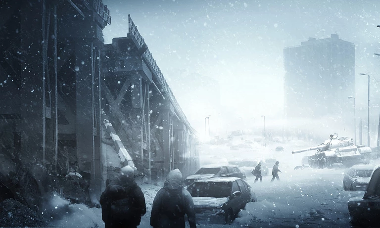

L'HIVER

L'hiver est un évènement qui arrive généralement vers le jour 20. il dure entre 10 et 15 jours.
C'est la période la plus compliquée à survivre parce qu'il va falloir beaucoup d'objets, outils...
Pour tenir durant l'hiver, il va vous falloir:
- un chauffage, pour des raisons évidentes
- Du combustible, que l'on peut trouver lors de récoltes ou construire:
- avec des matériaux
- avec du bois
- avec des livres
- une hachette, pour pouvoir détruire des objets en bois qui donneront bois et combustibles
- une radio, qui vous informera sur l'évolution de la méteo(augmentation ou baisse de la température)
- des médicaments et bandages, pour pouvoir soigner vos survivants qui risquent de se blesser ou de tomber malade
- des quantités conséquentes de nourriture
Il faudra que vous soyez sur vos gardes à tout moment. L'hiver ne va pas arrêter les criminels de vous attaquer!
La neige empêchera l'accès à beaucoup de zones et donc rendra plus compliqué la collecte
Aussi, si la température dans l'abris tombe en dessous de 15°C, vos survivants risqueront de tomber malade
Ensuite viens un évènement très important...
Pour retourner à la première page, c'est ce lien